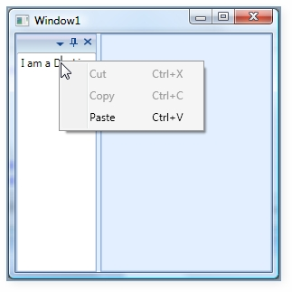
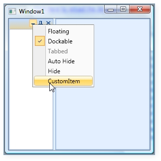
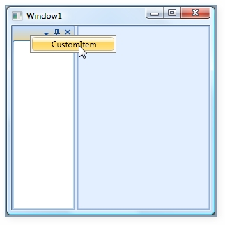

A dockable window will be associated with a default context menu with default menu items. The DockingManager provides options to add custom context menu for the dockable window. You can set a context menu using the following code snippet.
|
[XAML] <syncfusion:DockingManager Name="DockingManager1"> <syncfusion:DockingManager.ContextMenu> <ContextMenu> <MenuItem Header="Cut" InputGestureText="Ctrl+X" Command="ApplicationCommands.Cut" /> <MenuItem Header="Copy" InputGestureText="Ctrl+C" Command="ApplicationCommands.Copy" /> <MenuItem Header="Paste" InputGestureText="Ctrl+V" Command="ApplicationCommands.Paste" /> </ContextMenu> </syncfusion:DockingManager.ContextMenu> <TextBox syncfusion:DockingManager.SideInDockedMode="Left" syncfusion:DockingManager.State="Dock"> I am a Docking panel </TextBox> </syncfusion:DockingManager> |
The output is as follows.

Figure 339: Custom Context Menu Added to the Docked Window
The frame work provides some in-built events such as ContextMenuOpening and ContextMenuClosing, which are handled when the context menu opens or closes.
|
[C#] //Creating instance for the Docking Manager. DockingManager = new DockingManager(); //Triggering using the context menu events. DockingManager.ContextMenuOpening += new ContextMenuEventHandler(DockingManager_ContextMenuOpening); DockingManager.ContextMenuClosing += new ContextMenuEventHandler(DockingManager_ContextMenuClosing); |
There are some in-built command bindings to handle the actions of the context menu, which will be much handy.
ContextMenuItemClick Event
It is a bubbling routed event, which is handled when a context menu item click is completed.
Use the following code snippet below for triggering this event.
|
[C#] //Creating instance for the Docking Manager. DockingManager = new DockingManager(); //Triggering using the context menu click events. DockingManager.ContextMenuItemClick += new RoutedEventHandler(DockingManager_ContextMenuItemClick); /// <summary> /// Handles the ContextMenuItemClick event of the Docking Manager /// </summary> /// <param name="sender">The source of the event.</param> /// <param name="e">The <see cref="System.Windows.RoutedEventArgs"/> instance containing the event data.</param> void DockingManager_ContextMenuItemClick(object sender, RoutedEventArgs e) { //Set the required actions here. } |
Custom Menu Items
A dockable window is well associated with a default context menu with default menu items. You can also add custom menu items to the existing context menu items of the dockable window. CustomMenuItems property is used for this purpose.
CustomMenuItems - This property is attached to a docking manager child, and gives an ability to add some additional menu items to the context menu. This can easily extend GUI functionality by using the Custom menu items.
To add the custom menu item:
|
[XAML] <syncfusion:DockingManager Name="DockingManager1" > <syncfusion:DockingManager.CustomMenuItems> <syncfusion:CustomMenuItemCollection> <syncfusion:CustomMenuItem Header="CustomItem" /> </syncfusion:CustomMenuItemCollection> </syncfusion:DockingManager.CustomMenuItems> <TextBox syncfusion:DockingManager.SideInDockedMode="Left" syncfusion:DockingManager.State="Dock"/> </syncfusion:DockingManager> |
|
[C#] //Creating instance for the Docking Manager. DockingManager = new DockingManager(); //Creating instance for custom items collections. CustomMenuItemCollection collection = new CustomMenuItemCollection();
//Creating custom menu items. CustomMenuItem customitem = new CustomMenuItem(); //Setting the header for the items. customitem.Header = "Custom Item"; //Adding the items to the collection. collection.Add(customitem); //Setting the custom menu items. DockingManager.SetCustomMenuItems(DockingManager, collection); |

Figure 340: Custom Menu Item added to the Context Menu
We can disable the default menu item such as Dockable, Floating, AutoHide and so on. This can be done by CollapseDefaultContextMenuItems property.. The usage is shown below.
|
[XAML] <syncfusion:DockingManager Name="DockingManager1" CollapseDefaultContextMenuItems="True" > <syncfusion:DockingManager.CustomMenuItems> <syncfusion:CustomMenuItemCollection> <syncfusion:CustomMenuItem Header="CustomItem" /> </syncfusion:CustomMenuItemCollection> </syncfusion:DockingManager.CustomMenuItems> <TextBox syncfusion:DockingManager.SideInDockedMode="Left" syncfusion:DockingManager.State="Dock"/> </syncfusion:DockingManager> |
|
[C#] DockingManager = new DockingManager(); //Creating instance for custom items collections. CustomMenuItemCollection collection = new CustomMenuItemCollection();
//Creating custom menu items. CustomMenuItem customitem = new CustomMenuItem(); //Setting the header for the items. customitem.Header = "Custom Item"; //Adding the items to the collection. collection.Add(customitem); //Setting the custom menu items. DockingManager.SetCustomMenuItems(DockingManager, collection); DockingManager.CollapseDefaultContextMenuItems = true; |

Figure 341: Collapse Default Menuitems